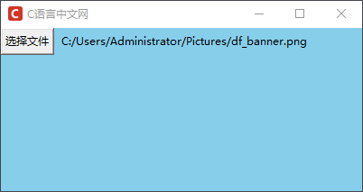
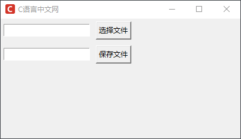
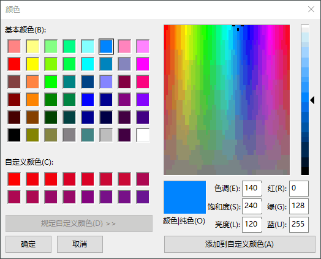
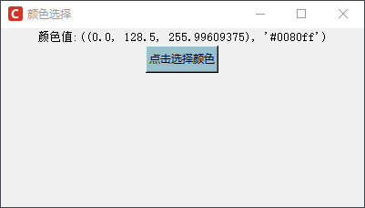
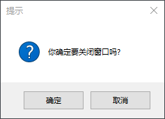

Tkinter对话框控件
在前面的章节中，我们花费了大量的时间讲解了 Tkinter 中常用基本控件，通过对这些控件的学习，我们对 GUI 开发有了基本的认识与掌握，一个完整的 GUI 程序就是由这些组件以合理、美观的布局方式构成的。
除了基本的控件之外，Tkinter 还提供了三种对话框控件：
这些对话框的使用能够在一定程度上增强用户的交互体验，下面对这些对话框控件进行详细地介绍。
上述方法的常用参数值如下所示：
下面看一组具体的实例应用：
下面再看一组“保存文件”的示例代码如下：
颜色选择对话款主要应用在画笔、涂鸦等功能上，通过它可以绘制出五彩缤纷的颜色，该对话框的使用非常简单，主要有以下两个常用方法：
常用的颜色对话框的参数值如下表所示：
下面看一组简单的使用示例：
消息对话框主要起到信息提示、警告、说明、询问等作用，通常配合“事件函数”一起使用，比如执行某个操作出现了错误，然后弹出错误消息提示框。通过使用消息对话框可以提升用户的交互体验，也使得 GUI 程序更加人性化。消息对话框主要包含了以下常用方法：
上述方法拥有相同的选项参数，如下表所示：
上述方法的返回值一般会是一个布尔值，或者是“YES”，“NO”，“OK”等，这些方法使用较为简单，此处不进行逐一列举，看个简单的示例即可：
除了基本的控件之外，Tkinter 还提供了三种对话框控件：
- 文件选择对话框：filedailog
- 颜色选择对话框：colorchooser
- 消息对话框：messagebox
这些对话框的使用能够在一定程度上增强用户的交互体验，下面对这些对话框控件进行详细地介绍。
文件选择对话框
文件对话框在 GUI 程序中经常的使用到，比如上传文档需要从本地选择一个文件，包括文件的打开和保存功能都需要一个文件对话框来实现。Tkinter 提供文件对话框被封装在tkinter.filedailog模块中，该模块提供了有关文件对话框的常用函数，经常使用的有以下几个：| 方法 | 说明 |
|---|---|
| Open() | 打开个某个文件 |
| SaveAs() | 打开一个保存文件的对话框 |
| askopenfilename() | 打开某个文件，并以包函文件名的路径作为返回值 |
| askopenfilenames() | 同时打开多个文件，并以元组形式返回多个文件名 |
| askopenfile() | 打开文件，并返回文件流对象 |
| askopenfiles() | 打开多个文件，并以列表形式返回多个文件流对象 |
| asksaveasfilename() | 选择以什么文件名保存文件，并返回文件名 |
| asksaveasfile() | 选择以什么类型保存文件，并返回文件流对象 |
| askdirectory | 选择目录，并返回目录名 |
上述方法的常用参数值如下所示：
| 参数 | 说明 |
|---|---|
| defaultextension | 指定文件的后缀名，当保存文件时自动添加文件名，如果自动添加了文件的后缀名，则该选项值不会生效 |
| filetypes | 指定筛选文件类型的下拉菜单选项，该选项值是由 2 元祖构成的列表，其中每个二元祖由两部分组成 (类型名,后缀)，比如 filetypes = [("PNG","*.png"), ("JPG", "*.jpg"), ("GIF","*.gif"),("文本文件","*.txt")...] |
| initialdir | 指定打开/保存文件的默认路径，默认路径是当前文件夹 |
| parent | 如果不指定该选项，那么对话框默认显示在根窗口上，通过设置该参数可以使得对话框显示在子窗口上 |
| title | 指定文件对话框的标题 |
下面看一组具体的实例应用：
from tkinter import *
import tkinter.filedialog # 注意次数要将文件对话框导入
# 定义一个处理文件的相关函数
def askfile():
# 从本地选择一个文件，并返回文件的目录
filename = tkinter.filedialog.askopenfilename()
if filename != '':
lb.config(text= filename)
else:
lb.config(text='您没有选择任何文件')
root = Tk()
root.config(bg='#87CEEB')
root.title("C语言中文网")
root.geometry('400x200+300+300')
root.iconbitmap('C:/Users/Administrator/Desktop/C语言中文网logo.ico')
btn=Button(root,text='选择文件',relief=RAISED,command=askfile)
btn.grid(row=0,column=0)
lb = Label(root,text='',bg='#87CEEB')
lb.grid(row=0,column=1,padx=5)
# 显示窗口
root.mainloop()
程序运行结果：

图1：文件选择界面
图1：文件选择界面
下面再看一组“保存文件”的示例代码如下：
import tkinter as tk
from tkinter import filedialog
from PIL import Image
def open_img():
try:
global img
filepath = filedialog.askopenfilename() # 打开文件，返回该文件的完整路径
filename.set(filepath)
img = Image.open(filename.get())
except Exception as e:
print("您没有选择任何文件",e)
def save_png():
try:
filetypes = [("PNG","*.png"), ("JPG", "*.jpg"), ("GIF","*.gif"),("txt files","*.txt"),('All files','*')]
# 返回一个 pathname 文件路径字符串，如果取消或者关闭则返回空字符，返回文件如何操作是后续代码的事情，
# 该函数知识返回选择文件的文件名字，不具备保存文件的能力
filenewpath= filedialog.asksaveasfilename(title='保存文件',
filetypes=filetypes,
defaultextension='.png',
initialdir='C:/Users/Administrator/Desktop' )
path_var.set(filenewpath)
# 保存文件
img.save(str(path_var.get()))
except Exception as e:
print(e)
window = tk.Tk()
window.title("C语言中文网")
window.geometry('400x200+300+300')
window.iconbitmap('C:/Users/Administrator/Desktop/C语言中文网logo.ico')
filename = tk.StringVar()
path_var = tk.StringVar()
# 定义读取文件的组件
entry = tk.Entry(window, textvariable=filename)
entry.grid(row=1, column=0, padx=5, pady=5)
tk.Button(window, text='选择文件', command=open_img).grid(row=1, column=1, padx=5, pady=5)
# 定义保存文件的组件
entry1 = tk.Entry(window, textvariable=path_var)
entry1.grid(row=2, column=0, padx=5, pady=5)
tk.Button(window, text='保存文件', command=save_png).grid(row=2, column=1, padx=5, pady=5)
window.mainloop()
程序运行结果：

图2：程序运行结果
图2：程序运行结果
颜色选择对话框
颜色选择对话框（colorchooser），提供了一个非常友善的颜色面板，它允许用户选择自己所需要的颜色。 当用户在面板上选择一个颜色并按下“确定”按钮后，它会返回一个二元祖，其第 1 个元素是选择的 RGB 颜色值，第 2 个元素是对应的 16 进制颜色值。颜色选择对话款主要应用在画笔、涂鸦等功能上，通过它可以绘制出五彩缤纷的颜色，该对话框的使用非常简单，主要有以下两个常用方法：
| 方法 | 说明 |
|---|---|
| askcolor() | 打开一个颜色对话框，并将用户选择的颜色值以元组的形式返回（没选择返回None），格式为((R, G, B), "#rrggbb") |
| Chooser() | 打开一个颜色对话框，并用户选择颜色确定后，返回一个二元组，格式为（(R, G, B), "#rrggbb"） |
常用的颜色对话框的参数值如下表所示：
| 属性 | 说明 |
|---|---|
| default | 要显示的初始的颜色，默认颜色是浅灰色（light gray） |
| title | 指定颜色选择器标题栏的文本，默认标题为“颜色” |
| parent |
1. 如果不指定该选项，那么对话框默认显示在根窗口上 2. 如果想要将对话框显示在子窗口上，那么可以设置 parent = 子窗口对象 |
下面看一组简单的使用示例：
import tkinter as tk
from tkinter import colorchooser
root = tk.Tk()
root.title("颜色选择")
root.geometry('400x200+300+300')
root.iconbitmap('C:/Users/Administrator/Desktop/C语言中文网logo.ico')
def callback():
# 打开颜色对话款
colorvalue = tk.colorchooser.askcolor()
# 在颜色面板点击确定后，会在窗口显示二元组颜色值
lb.config(text='颜色值:'+ str(colorvalue))
lb=tk.Label(root,text='',font=('宋体',10))
# 将label标签放置在主窗口
lb.pack()
tk.Button(root, text="点击选择颜色", command=callback, width=10, bg='#9AC0CD').pack()
# 显示界面
root.mainloop()
颜色对话框如下所示：

图3：tkinter颜色对话框
上述程序的运行结果如下：图3：tkinter颜色对话框

图4：程序运行结果
图4：程序运行结果
消息对话框
关于消息对话款（messagebox），在前面介绍其他控件时已经使用过，在本节仅对它做简单介绍。消息对话框主要起到信息提示、警告、说明、询问等作用，通常配合“事件函数”一起使用，比如执行某个操作出现了错误，然后弹出错误消息提示框。通过使用消息对话框可以提升用户的交互体验，也使得 GUI 程序更加人性化。消息对话框主要包含了以下常用方法：
| 方法 | 说明 |
|---|---|
| askokcancel(title=None, message=None) | 打开一个“确定／取消”的对话框 |
| askquestion(title=None, message=None) | 打开一个“是／否”的对话框。 |
| askretrycancel(title=None, message=None) | 打开一个“重试／取消”的对话框 |
| askyesno(title=None, message=None) | 打开一个“是／否”的对话框 |
| showerror(title=None, message=None) | 打开一个错误提示对话框 |
| showinfo(title=None, message=None) | 打开一个信息提示对话框 |
| showwarning(title=None, message=None) | 打开一个警告提示对话框 |
上述方法拥有相同的选项参数，如下表所示：
| 属性 | 说明 |
|---|---|
| default |
1. 设置默认的按钮（也就是按下回车响应的那个按钮） 2. 默认是第一个按钮（像“确定”，“是”或“重试”） 3. 可以设置的值根据对话框函数的不同，可以选择 CANCEL，IGNORE，OK，NO，RETRY 或 YES |
| icon |
1. 指定对话框显示的图标 2. 可以指定的值有：ERROR，INFO，QUESTION 或 WARNING 3. 注意：不能指定自己的图标 |
| parent |
1. 如果不指定该选项，那么对话框默认显示在根窗口上 2. 如果想要将对话框显示在子窗口上，那么可以设置 parent= 子窗口对象 |
上述方法的返回值一般会是一个布尔值，或者是“YES”，“NO”，“OK”等，这些方法使用较为简单，此处不进行逐一列举，看个简单的示例即可：
import tkinter.messagebox
result=tkinter.messagebox.askokcancel ("提示"," 你确定要关闭窗口吗? ")
# 返回布尔值参数
print(result)
程序运行结果：

图5：消息对话框
图5：消息对话框
关注公众号「站长严长生」，在手机上阅读所有教程，随时随地都能学习。内含一款搜索神器，免费下载全网书籍和视频。

微信扫码关注公众号